Individual EDA: Hidden Hypoxemia and Its Economic Consequences
OpenOximetry + NY SPARCS Inpatient Discharge Data
Overview
This EDA covers both project datasets and the bridge connecting them:
- OpenOximetry (UCSF Hypoxia Lab) — paired pulse oximeter (SpO₂) and arterial blood gas (SaO₂) measurements with objective skin tone scores. Used to measure who gets misdiagnosed and by how much.
- NY SPARCS Inpatient Discharge 2021 — 103K respiratory discharge records from New York State hospitals with charges, costs, length of stay, insurance, and severity. Used to measure who pays more and arrives sicker.
- Bridge analysis — because the two datasets do not share patients, the connection is made at the group level: race-stratified summaries from each dataset are joined on race to trace the downstream economic consequences of pulse oximeter bias.
Setup
The analysis is structured as a three-part argument. Part 1 establishes the clinical reality: pulse oximeters systematically fail darker-skinned patients, and that failure is measurable and graded by skin tone. Part 2 documents the economic reality: Black and Hispanic/Latino patients pay more for respiratory care at every age, under every insurance type, at every severity level. Part 3 asks whether these two realities are connected and finds that the racial ordering in misdiagnosis rates is consistent with the racial ordering in costs, and that the charge gap persists even after the two most obvious confounders (insurance and severity) are removed.
Part 1 — OpenOximetry Dataset
Load and Merge
The OpenOximetry dataset is stored as five relational CSVs. All five are joined into a single analysis-ready tibble. age_at_encounter is pulled from the encounter table and race_eth is constructed with ethnicity taking priority over race to correctly classify Hispanic patients.
Show code
patients <- read_csv("../data/raw/patient.csv")
encounter <- read_csv("../data/raw/encounter.csv")
pulseoximeter <- read_csv("../data/raw/pulseoximeter.csv")
bloodgas <- read_csv("../data/raw/bloodgas.csv")
oximetry <- pulseoximeter |>
inner_join(
bloodgas |> select(encounter_id, sample, so2),
by = c("encounter_id", "sample_number" = "sample")
) |>
rename(SpO2 = saturation, SaO2 = so2) |>
left_join(
encounter |> select(
encounter_id, patient_id, fitzpatrick, age_at_encounter
),
by = "encounter_id"
) |>
left_join(
patients |> select(patient_id, race, ethnicity),
by = "patient_id"
) |>
mutate(
bias = SpO2 - SaO2,
occult_hypoxemia = SpO2 >= 88 & SaO2 < 88,
skin_group = cut(
fitzpatrick,
breaks = c(0, 2, 4, 6),
labels = c("Light (I–II)", "Medium (III–IV)", "Dark (V–VI)"),
include.lowest = TRUE
),
race_eth = case_when(
ethnicity == "Hispanic" ~ "Hispanic/Latino",
str_detect(race, "African American") &
ethnicity == "Not Hispanic" ~ "Black",
race == "Caucasian" &
ethnicity == "Not Hispanic" ~ "White",
str_detect(race, "^Asian") &
ethnicity == "Not Hispanic" ~ "Asian",
TRUE ~ NA_character_
)
) |>
filter(!is.na(race_eth))
# Remove non-finite bias values caused by bad join rows
oximetry <- oximetry |>
filter(is.finite(bias), is.finite(SpO2), is.finite(SaO2))
glimpse(oximetry)Rows: 134,936
Columns: 16
$ encounter_id <chr> "01a542fef90c977867f1016bb46772e233006183c5c879b4c3ad…
$ device <dbl> 59, 59, 60, 60, 73, 73, 59, 59, 60, 60, 73, 73, 59, 5…
$ probe_location <dbl> NA, NA, NA, NA, NA, NA, NA, NA, NA, NA, NA, NA, NA, N…
$ sample_number <dbl> 1, 1, 1, 1, 1, 1, 2, 2, 2, 2, 2, 2, 3, 3, 3, 3, 3, 3,…
$ SpO2 <dbl> 97, 97, 97, 97, 98, 98, 93, 93, 92, 92, 94, 94, 93, 9…
$ pi <dbl> 34.0, 34.0, 4.8, 4.8, 5.0, 5.0, 29.0, 29.0, 4.7, 4.7,…
$ SaO2 <dbl> 98.4, 98.6, 98.4, 98.6, 98.4, 98.6, 93.7, 94.0, 93.7,…
$ patient_id <chr> "55475c97e020e3161c4c98884cacd4ae73bf48629373c68b40c4…
$ fitzpatrick <dbl> 3, 3, 3, 3, 3, 3, 3, 3, 3, 3, 3, 3, 3, 3, 3, 3, 3, 3,…
$ age_at_encounter <dbl> 25, 25, 25, 25, 25, 25, 25, 25, 25, 25, 25, 25, 25, 2…
$ race <chr> "Asian", "Asian", "Asian", "Asian", "Asian", "Asian",…
$ ethnicity <chr> "Not Hispanic", "Not Hispanic", "Not Hispanic", "Not …
$ bias <dbl> -1.4, -1.6, -1.4, -1.6, -0.4, -0.6, -0.7, -1.0, -1.7,…
$ occult_hypoxemia <lgl> FALSE, FALSE, FALSE, FALSE, FALSE, FALSE, FALSE, FALS…
$ skin_group <fct> Medium (III–IV), Medium (III–IV), Medium (III–IV), Me…
$ race_eth <chr> "Asian", "Asian", "Asian", "Asian", "Asian", "Asian",…The merged dataset contains 134,936 paired measurements across 199 unique patients.
The dataset captures paired measurements taken simultaneously by multiple pulse oximeter devices and an arterial blood gas draw. Each row is one device reading matched to one blood gas measurement, so a single patient encounter generates multiple rows — one per device per sample. The key outcome variables are bias (how much the device overestimates true saturation) and occult_hypoxemia (whether the device reads normal while the patient is actually hypoxic
Structure and Missingness
Show code
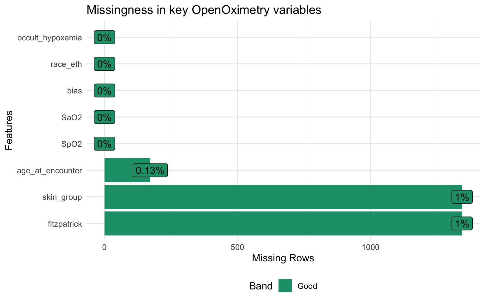
Show code
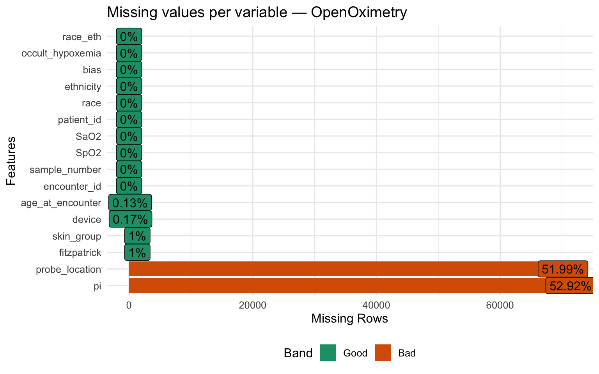
Patient Demographics
Show code
oximetry |>
distinct(patient_id, .keep_all = TRUE) |>
select(race_eth, age_at_encounter, fitzpatrick, skin_group) |>
tbl_summary(
label = list(
race_eth ~ "Race / Ethnicity",
age_at_encounter ~ "Age at encounter (years)",
fitzpatrick ~ "Fitzpatrick score (1–6)",
skin_group ~ "Skin tone group"
),
statistic = list(
all_continuous() ~ "{mean} ({sd})",
all_categorical() ~ "{n} ({p}%)"
),
missing = "ifany"
) |>
bold_labels() |>
modify_caption("**Table 1. Patient demographics — OpenOximetry (unique patients)**")| Characteristic | N = 1991 |
|---|---|
| Race / Ethnicity | |
| Asian | 63 (32%) |
| Black | 51 (26%) |
| Hispanic/Latino | 27 (14%) |
| White | 58 (29%) |
| Age at encounter (years) | 27.2 (5.5) |
| Unknown | 2 |
| Fitzpatrick score (1–6) | |
| 1 | 19 (9.6%) |
| 2 | 38 (19%) |
| 3 | 43 (22%) |
| 4 | 37 (19%) |
| 5 | 28 (14%) |
| 6 | 33 (17%) |
| Unknown | 1 |
| Skin tone group | |
| Light (I–II) | 57 (29%) |
| Medium (III–IV) | 80 (40%) |
| Dark (V–VI) | 61 (31%) |
| Unknown | 1 |
| 1 n (%); Mean (SD) | |
Show code
p_race <- oximetry |>
distinct(patient_id, .keep_all = TRUE) |>
count(race_eth) |>
mutate(race_eth = fct_reorder(race_eth, n)) |>
ggplot(aes(x = n, y = race_eth, fill = race_eth)) +
geom_col(show.legend = FALSE, alpha = 0.85) +
scale_fill_brewer(palette = "Set2") +
labs(title = "Patients by race / ethnicity", x = "Count", y = NULL)
p_skin <- oximetry |>
distinct(patient_id, .keep_all = TRUE) |>
filter(!is.na(skin_group)) |>
count(skin_group) |>
ggplot(aes(x = skin_group, y = n, fill = skin_group)) +
geom_col(show.legend = FALSE, alpha = 0.85) +
scale_fill_manual(values = c("#f5c07a", "#c8855a", "#6b3a2a")) +
labs(title = "Patients by Fitzpatrick group", x = NULL, y = "Count")
p_race + p_skin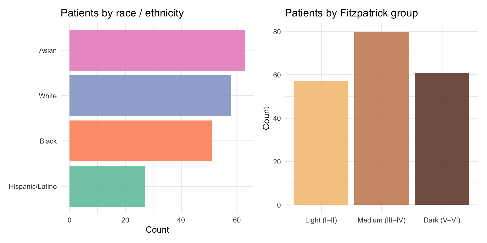
The sample skews toward medium Fitzpatrick scores (III–IV), with fewer patients at the extremes of the scale. Estimates for Fitzpatrick I–II and V–VI are based on smaller subgroups and carry more uncertainty than estimates for the middle range. This is worth keeping in mind when interpreting the skin-tone gradients below.
SpO₂, SaO₂, and Bias Distributions
Show code
oximetry |>
select(SpO2, SaO2) |>
pivot_longer(everything(), names_to = "measure", values_to = "value") |>
ggplot(aes(x = value, fill = measure)) +
geom_density(alpha = 0.45) +
scale_fill_manual(values = c("SaO2" = "#2171b5", "SpO2" = "#ef6548")) +
geom_vline(xintercept = 88, linetype = "dashed", color = "grey40") +
annotate("text", x = 87.3, y = 0.15, label = "88% threshold",
hjust = 1, size = 3.5, color = "grey40") +
labs(
title = "SpO₂ (pulse ox) vs. SaO₂ (arterial blood gas)",
x = "Oxygen saturation (%)", y = "Density", fill = "Measurement"
)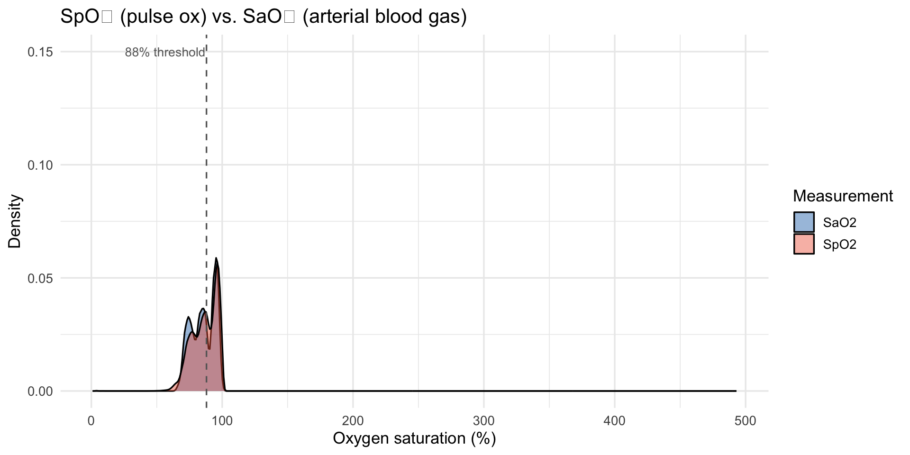
Show code
bias_mean <- mean(oximetry$bias, na.rm = TRUE)
oximetry |>
filter(between(bias, -20, 20)) |>
ggplot(aes(x = bias)) +
geom_density(fill = "#9ecae1", alpha = 0.7) +
geom_vline(xintercept = 0, linetype = "solid", color = "grey30") +
geom_vline(xintercept = bias_mean, linetype = "dashed", color = "#e34a33") +
annotate("text", x = bias_mean + 0.3, y = Inf, vjust = 1.5,
label = paste0("Mean = ", round(bias_mean, 2), " pp"),
color = "#e34a33", size = 3.8) +
labs(
title = "Distribution of pulse oximeter bias (SpO₂ − SaO₂)",
subtitle = "Positive = device overestimates true oxygen saturation; capped at ±20 pp for readability",
x = "Bias (pp)", y = "Density"
)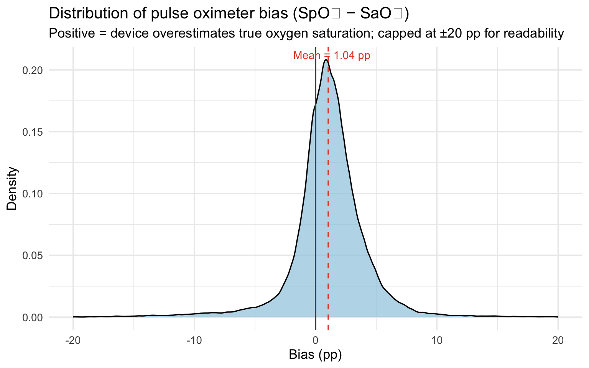
The mean bias of 1.04 percentage points means the pulse oximeter reports oxygen saturation about one point higher than the patient actually has on average. That sounds small, but clinical decisions — whether to administer supplemental oxygen, whether a patient is stable for discharge — are often made on differences of one or two points. A device that consistently flatters the reading shifts those decision thresholds in ways that disadvantage every patient, but disadvantage darker-skinned patients most.
Show code
oximetry |>
filter(!is.na(skin_group), between(bias, -20, 20)) |>
ggplot(aes(x = skin_group, y = bias, fill = skin_group)) +
geom_violin(alpha = 0.5, trim = TRUE) +
geom_boxplot(width = 0.15, outlier.shape = NA, alpha = 0.8) +
geom_hline(yintercept = 0, linetype = "dashed", color = "grey40") +
scale_fill_manual(values = c("#f5c07a", "#c8855a", "#6b3a2a")) +
labs(
title = "Pulse oximeter bias by Fitzpatrick skin tone group",
subtitle = "Capped at ±20 pp; shows bulk of distribution",
x = "Skin tone group", y = "Bias (SpO₂ − SaO₂, pp)"
) +
theme(legend.position = "none")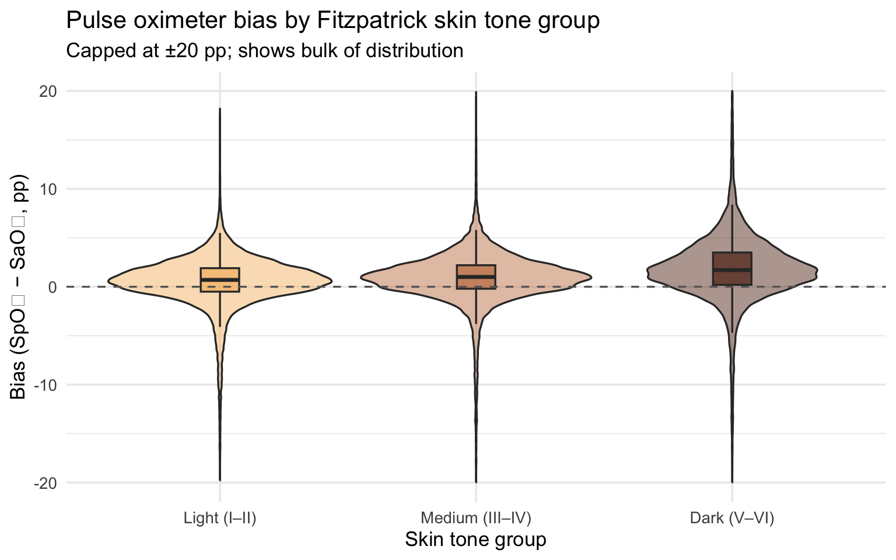
Show code
oximetry |>
filter(!is.na(fitzpatrick), between(bias, -20, 20)) |>
ggplot(aes(x = fitzpatrick, y = bias)) +
geom_jitter(alpha = 0.15, width = 0.15, color = "#6b3a2a") +
geom_smooth(method = "loess", se = TRUE, color = "#e34a33", linewidth = 1.2) +
geom_hline(yintercept = 0, linetype = "dashed", color = "grey40") +
scale_x_continuous(breaks = 1:6) +
labs(
title = "Pulse oximeter bias vs. continuous Fitzpatrick score",
subtitle = "Bias increases continuously with darker skin tone; capped at ±20 pp",
x = "Fitzpatrick score (1 = lightest, 6 = darkest)", y = "Bias (pp)"
)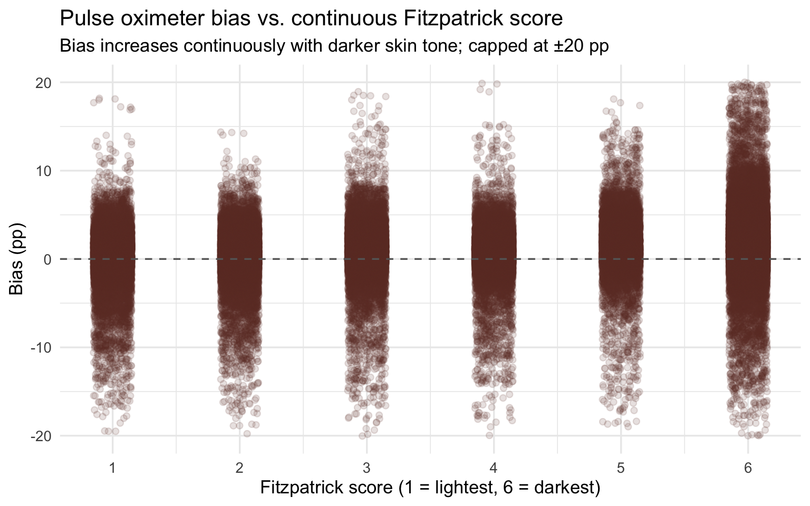
Bias magnitude matters because it determines whether a patient crosses the clinical threshold for treatment. The most consequential form of error is occult hypoxemia: the device reads SpO₂ ≥ 88% (appearing normal) while true SaO₂ is below 88% (the patient is genuinely hypoxic). This is not a measurement nuisance — it is the specific failure mode that causes clinicians to withhold oxygen therapy and delay intervention from patients who need it.
Show code
oximetry |>
filter(!is.na(skin_group)) |>
group_by(skin_group) |>
summarise(
n = n(),
n_occult = sum(occult_hypoxemia, na.rm = TRUE),
rate = n_occult / n
) |>
ggplot(aes(x = skin_group, y = rate, fill = skin_group)) +
geom_col(alpha = 0.85) +
geom_text(aes(label = percent(rate, accuracy = 0.1)), vjust = -0.5, size = 4) +
scale_y_continuous(labels = percent_format(),
expand = expansion(mult = c(0, 0.1))) +
scale_fill_manual(values = c("#f5c07a", "#c8855a", "#6b3a2a")) +
labs(
title = "Occult hypoxemia rate by Fitzpatrick skin tone group",
x = "Skin tone group", y = "Rate of occult hypoxemia"
) +
theme(legend.position = "none")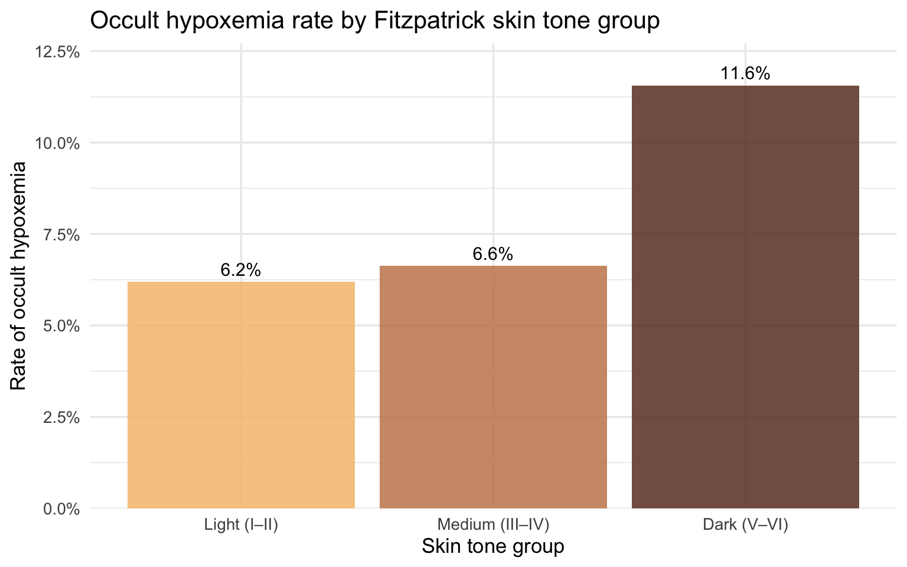
The pattern by skin tone group maps directly onto race when the same data is stratified by self-reported race and ethnicity. Because race and skin tone are correlated but not identical — not all Black patients have dark Fitzpatrick scores, and not all patients with dark Fitzpatrick scores are Black — the race analysis captures a slightly different slice of the disparity. Together, the two views strengthen the case: the device fails systematically along both a biological dimension (melanin concentration) and a social one (race as experienced in a clinical encounter).
Occult Hypoxemia by Race
Show code
oximetry |>
filter(!is.na(race_eth)) |>
group_by(race_eth) |>
summarise(rate = mean(occult_hypoxemia, na.rm = TRUE), n = n()) |>
mutate(race_eth = fct_reorder(race_eth, rate)) |>
ggplot(aes(x = rate, y = race_eth, fill = race_eth)) +
geom_col(alpha = 0.85, show.legend = FALSE) +
geom_text(aes(label = percent(rate, accuracy = 0.1)),
hjust = -0.15, size = 3.8) +
scale_x_continuous(labels = percent_format(),
expand = expansion(mult = c(0, 0.12))) +
scale_fill_brewer(palette = "Set2") +
labs(
title = "Occult hypoxemia rate by race / ethnicity",
x = "Rate of occult hypoxemia", y = NULL
)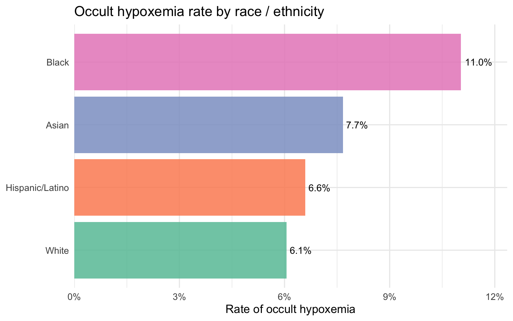
Part 1 has established who gets misdiagnosed and by how much. Part 2 now turns to the economic side of the same question: among patients admitted to New York State hospitals with respiratory diagnoses, who pays more, who stays longer, and who arrives sicker — and does that ordering match what the oximetry data predicts?
Part 2 — NY SPARCS Inpatient Discharge Dataset
Load and Clean
SPARCS is pulled directly from the NY Health Data API, filtered server-side to respiratory diagnoses. No file is saved to disk.
Show code
sparcs_raw <- read_csv(
"https://health.data.ny.gov/resource/tg3i-cinn.csv?$where=ccsr_diagnosis_code%20like%20%27RSP%25%27&$limit=500000",
show_col_types = FALSE
)
sparcs <- sparcs_raw |>
filter(str_starts(ccsr_diagnosis_code, "RSP")) |>
mutate(
length_of_stay = as.numeric(length_of_stay),
total_charges = as.numeric(total_charges),
total_costs = as.numeric(total_costs),
# Ethnicity-first: Hispanic patients appear under multiple race codes
race_eth = case_when(
ethnicity == "Spanish/Hispanic" ~ "Hispanic/Latino",
race == "Black/African American" &
ethnicity == "Not Span/Hispanic" ~ "Black",
race == "White" &
ethnicity == "Not Span/Hispanic" ~ "White",
TRUE ~ NA_character_
),
age_group = case_when(
age_group %in% c("18 to 29", "30 to 49") ~ "18–49",
age_group == "50 to 69" ~ "50–69",
age_group == "70 or Older" ~ "70+",
TRUE ~ NA_character_
),
insurance = case_when(
str_detect(payment_typology_1, regex("medicaid", ignore_case = TRUE)) ~ "Medicaid",
str_detect(payment_typology_1, regex("medicare", ignore_case = TRUE)) ~ "Medicare",
str_detect(payment_typology_1, regex("private", ignore_case = TRUE)) ~ "Private",
str_detect(payment_typology_1, regex("self", ignore_case = TRUE)) ~ "Self-Pay",
TRUE ~ "Other"
),
severity = factor(
apr_severity_of_illness,
levels = c("Minor", "Moderate", "Major", "Extreme")
),
severity_code = apr_severity_of_illness_code,
died = str_detect(
patient_disposition,
regex("expired|died", ignore_case = TRUE)
)
) |>
filter(!is.na(race_eth))
glimpse(sparcs)Rows: 87,175
Columns: 38
$ hospital_service_area <chr> "New York City", "New York City", "New …
$ hospital_county <chr> "Bronx", "Queens", "Manhattan", "Bronx"…
$ operating_certificate_number <chr> "7000002", "7003000", "7002024", "70000…
$ permanent_facility_id <chr> "001165", "001626", "001456", "001169",…
$ facility_name <chr> "Jacobi Medical Center", "Elmhurst Hosp…
$ age_group <chr> "18–49", "18–49", "18–49", "18–49", "18…
$ zip_code_3_digits <chr> "104", "113", "100", "104", "109", "115…
$ gender <chr> "F", "M", "M", "M", "F", "M", "F", "F",…
$ race <chr> "Other Race", "Other Race", "Other Race…
$ ethnicity <chr> "Spanish/Hispanic", "Spanish/Hispanic",…
$ length_of_stay <dbl> 2, 3, 1, 2, 2, 1, 12, 2, 2, 3, 2, 18, 3…
$ type_of_admission <chr> "Emergency", "Emergency", "Elective", "…
$ patient_disposition <chr> "Home or Self Care", "Home or Self Care…
$ discharge_year <dbl> 2021, 2021, 2021, 2021, 2021, 2021, 202…
$ ccsr_diagnosis_code <chr> "RSP001", "RSP001", "RSP001", "RSP001",…
$ ccsr_diagnosis_description <chr> "Sinusitis", "Sinusitis", "Sinusitis", …
$ ccsr_procedure_code <chr> NA, NA, "MST018", "ENT008", NA, "ENT017…
$ ccsr_procedure_description <chr> NA, NA, "BONE EXCISION", "NASAL AND SIN…
$ apr_drg_code <chr> "113", "113", "089", "098", "113", "098…
$ apr_drg_description <chr> "INFECTIONS OF UPPER RESPIRATORY TRACT"…
$ apr_mdc_code <chr> "03", "03", "03", "03", "03", "03", "03…
$ apr_mdc_description <chr> "DISEASES AND DISORDERS OF THE EAR, NOS…
$ apr_severity_of_illness_code <dbl> 2, 2, 2, 1, 1, 1, 3, 2, 2, 2, 2, 2, 2, …
$ apr_severity_of_illness <chr> "Moderate", "Moderate", "Moderate", "Mi…
$ apr_risk_of_mortality <chr> "Minor", "Minor", "Minor", "Minor", "Mi…
$ apr_medical_surgical <chr> "Medical", "Medical", "Surgical", "Surg…
$ payment_typology_1 <chr> "Medicaid", "Medicaid", "Medicaid", "Pr…
$ payment_typology_2 <chr> NA, NA, "Medicaid", NA, NA, "Self-Pay",…
$ payment_typology_3 <chr> NA, NA, "Self-Pay", NA, NA, NA, "Self-P…
$ birth_weight <chr> NA, NA, NA, NA, NA, NA, NA, NA, NA, NA,…
$ emergency_department_indicator <chr> "Y", "Y", "N", "N", "Y", "N", "N", "N",…
$ total_charges <dbl> 22932.90, 24601.68, 55654.06, 91238.45,…
$ total_costs <dbl> 13611.55, 11434.76, 17104.89, 17290.36,…
$ race_eth <chr> "Hispanic/Latino", "Hispanic/Latino", "…
$ insurance <chr> "Medicaid", "Medicaid", "Medicaid", "Pr…
$ severity <fct> Moderate, Moderate, Moderate, Minor, Mi…
$ severity_code <dbl> 2, 2, 2, 1, 1, 1, 3, 2, 2, 2, 2, 2, 2, …
$ died <lgl> FALSE, FALSE, FALSE, FALSE, FALSE, FALS…After filtering, the dataset contains 87,175 discharge records.
Unlike OpenOximetry, which is a controlled lab dataset with careful measurement protocols, SPARCS is administrative data — collected at the point of hospital discharge primarily for billing and regulatory purposes. The economic variables (charges, costs, length of stay) are measured precisely, but clinical variables like severity are assigned by coders working from discharge records rather than by clinicians at the bedside. That distinction matters for interpreting the bridge: if pulse oximeter bias causes delayed treatment, the true severity of a patient’s condition at the time of intervention may be worse than the coded APR severity score reflects — the score captures severity as documented, not severity as it actually developed.
Structure and Missingness
Show code
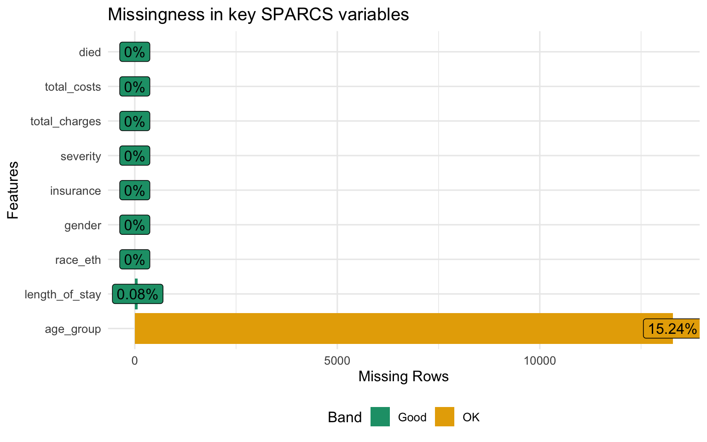
Show code
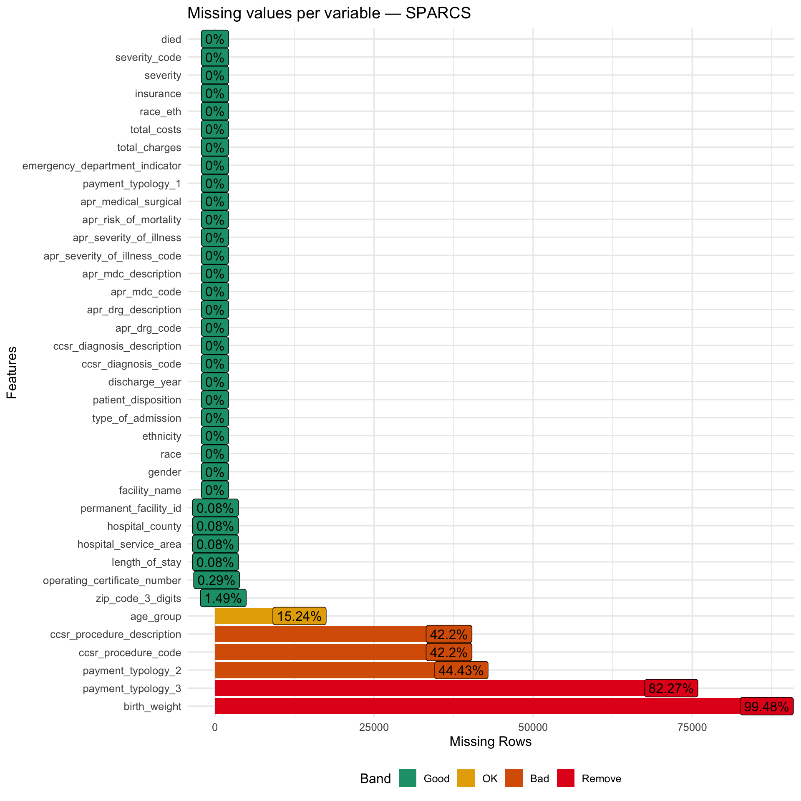
Patient Characteristics
Show code
sparcs |>
select(gender, race_eth, age_group, insurance, severity,
length_of_stay, total_charges, total_costs) |>
tbl_summary(
label = list(
gender ~ "Gender",
race_eth ~ "Race / Ethnicity",
age_group ~ "Age group",
insurance ~ "Insurance type",
severity ~ "Illness severity",
length_of_stay ~ "Length of stay (days)",
total_charges ~ "Total charges ($)",
total_costs ~ "Total costs ($)"
),
statistic = list(
all_continuous() ~ "{median} ({p25}, {p75})",
all_categorical() ~ "{n} ({p}%)"
),
missing = "ifany"
) |>
bold_labels() |>
modify_caption("**Table 2. Patient characteristics — SPARCS respiratory discharges**")| Characteristic | N = 87,1751 |
|---|---|
| Gender | |
| F | 44,052 (51%) |
| M | 43,122 (49%) |
| U | 1 (<0.1%) |
| Race / Ethnicity | |
| Black | 18,337 (21%) |
| Hispanic/Latino | 15,957 (18%) |
| White | 52,881 (61%) |
| Age group | |
| 18–49 | 10,174 (14%) |
| 50–69 | 29,339 (40%) |
| 70+ | 34,379 (47%) |
| Unknown | 13,283 |
| Insurance type | |
| Medicaid | 24,319 (28%) |
| Medicare | 46,941 (54%) |
| Other | 7,866 (9.0%) |
| Private | 7,244 (8.3%) |
| Self-Pay | 805 (0.9%) |
| Illness severity | |
| Minor | 12,654 (15%) |
| Moderate | 27,888 (32%) |
| Major | 32,204 (37%) |
| Extreme | 14,429 (17%) |
| Length of stay (days) | 4.0 (2.0, 6.0) |
| Unknown | 72 |
| Total charges ($) | 33,464 (17,891, 63,848) |
| Total costs ($) | 10,199 (5,783, 19,037) |
| 1 n (%); Median (Q1, Q3) | |
Race, Insurance, and Diagnosis Breakdown
Show code
p_race_s <- sparcs |>
count(race_eth) |>
mutate(race_eth = fct_reorder(race_eth, n)) |>
ggplot(aes(x = n, y = race_eth, fill = race_eth)) +
geom_col(show.legend = FALSE, alpha = 0.85) +
scale_x_continuous(labels = comma_format()) +
scale_fill_brewer(palette = "Set1") +
labs(title = "Discharges by race / ethnicity", x = "Count", y = NULL)
p_ins <- sparcs |>
count(insurance) |>
mutate(insurance = fct_reorder(insurance, n)) |>
ggplot(aes(x = n, y = insurance, fill = insurance)) +
geom_col(show.legend = FALSE, alpha = 0.85) +
scale_x_continuous(labels = comma_format()) +
scale_fill_brewer(palette = "Set2") +
labs(title = "Discharges by insurance type", x = "Count", y = NULL)
p_race_s + p_ins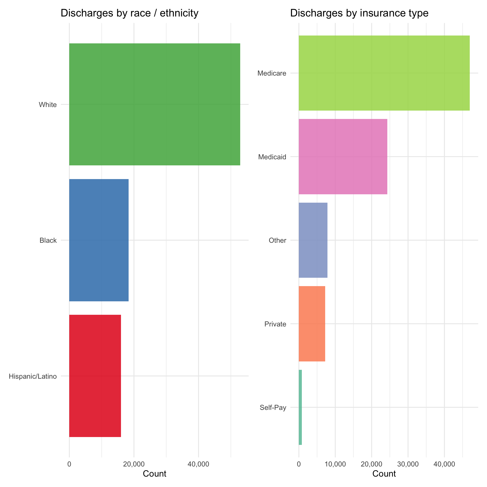
Show code
sparcs |>
count(ccsr_diagnosis_description) |>
slice_max(n, n = 15) |>
mutate(ccsr_diagnosis_description = fct_reorder(ccsr_diagnosis_description, n)) |>
ggplot(aes(x = n, y = ccsr_diagnosis_description)) +
geom_col(fill = "#6baed6", alpha = 0.85) +
scale_x_continuous(labels = comma_format()) +
labs(title = "Top 15 respiratory diagnoses", x = "Number of discharges", y = NULL)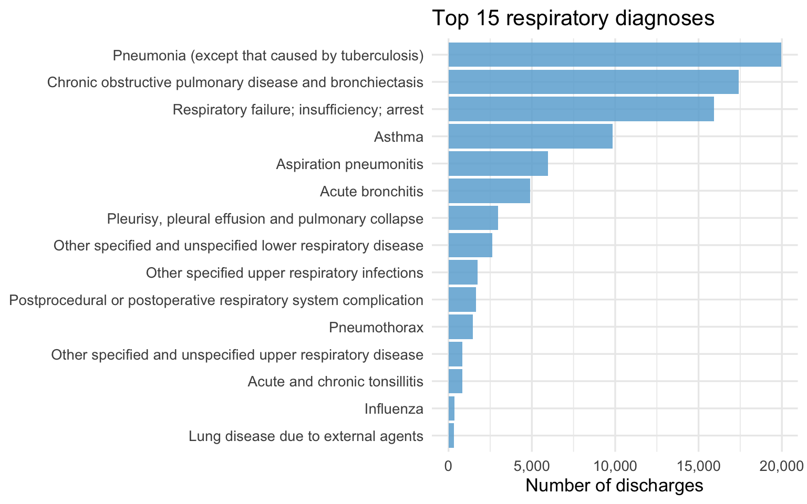
Distributions of Economic Outcomes
Charges and LOS by Race
Show code
p_charges_r <- sparcs |>
filter(!is.na(total_charges), total_charges > 0) |>
mutate(race_eth = fct_reorder(race_eth, total_charges, median)) |>
ggplot(aes(x = race_eth, y = total_charges, fill = race_eth)) +
geom_boxplot(outlier.alpha = 0.04, alpha = 0.8) +
scale_y_log10(labels = dollar_format()) +
scale_fill_brewer(palette = "Set1") +
labs(title = "Total charges by race (log scale)",
x = NULL, y = "Total charges") +
theme(legend.position = "none",
axis.text.x = element_text(angle = 20, hjust = 1))
p_los_r <- sparcs |>
filter(!is.na(length_of_stay)) |>
mutate(race_eth = fct_reorder(race_eth, length_of_stay, median)) |>
ggplot(aes(x = race_eth, y = length_of_stay, fill = race_eth)) +
geom_boxplot(outlier.alpha = 0.04, alpha = 0.8) +
scale_y_continuous(limits = c(0, 30)) +
scale_fill_brewer(palette = "Set1") +
labs(title = "Length of stay by race (capped at 30d)",
x = NULL, y = "Days") +
theme(legend.position = "none",
axis.text.x = element_text(angle = 20, hjust = 1))
p_charges_r + p_los_r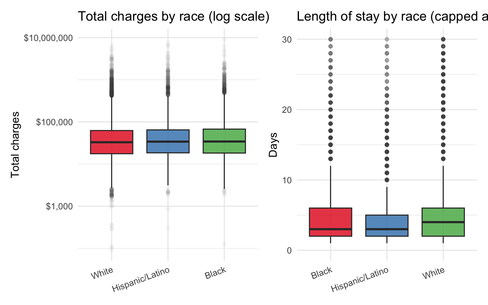
Insurance Mix by Race
Show code
sparcs |>
filter(!is.na(insurance)) |>
count(race_eth, insurance) |>
group_by(race_eth) |>
mutate(pct = n / sum(n)) |>
ungroup() |>
ggplot(aes(x = insurance, y = race_eth, fill = pct)) +
geom_tile(color = "white") +
geom_text(aes(label = percent(pct, accuracy = 1)), size = 3.2) +
scale_fill_distiller(palette = "Blues", direction = 1,
labels = percent_format()) +
labs(
title = "Insurance type distribution within each racial group",
x = "Insurance type", y = NULL, fill = "% within group"
) +
theme(axis.text.x = element_text(angle = 20, hjust = 1))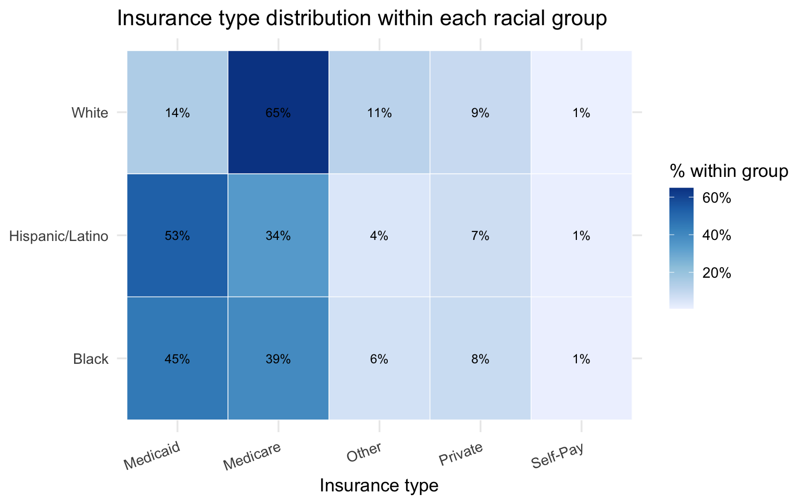
Two patterns in the SPARCS data are worth carrying forward into the bridge analysis. First, Black and Hispanic/Latino patients face higher charges and longer stays than White patients in the raw comparisons — but age is a major confounder because White respiratory patients skew older and are predominantly on Medicare. Second, the insurance distribution differs sharply by race, with Black and Hispanic/Latino patients far more likely to be on Medicaid or Self-Pay. Both of these alternative explanations need to be examined and ruled out before the charge disparity can be attributed to a clinical mechanism like pulse oximeter bias.
Part 3 — Bridge Analysis: Hypoxemia Leads to Economic Burden
The two datasets do not share patients. The connection is made at the group level: race-stratified summaries from each dataset are joined on race to test whether the racial gradient in occult hypoxemia is consistent with the racial gradient in costs and severity.
Hypothesized pathway: darker skin tone = higher occult hypoxemia rate = delayed treatment = higher severity at admission = longer stay = higher charges = compounded by insurance type
Race-Level Bridge Table
Show code
oximetry_summary <- oximetry |>
group_by(race_eth) |>
summarise(
n_measurements = n(),
occult_hypoxemia_rate = mean(occult_hypoxemia, na.rm = TRUE),
mean_bias = mean(bias, na.rm = TRUE),
.groups = "drop"
)
sparcs_summary <- sparcs |>
group_by(race_eth) |>
summarise(
n_discharges = n(),
median_charges = median(total_charges, na.rm = TRUE),
median_costs = median(total_costs, na.rm = TRUE),
median_los = median(length_of_stay, na.rm = TRUE),
mean_severity = mean(severity_code, na.rm = TRUE),
mortality_rate = mean(died, na.rm = TRUE),
pct_unprotected = mean(
insurance %in% c("Medicaid", "Self-Pay"), na.rm = TRUE
),
.groups = "drop"
)
bridge <- oximetry_summary |>
inner_join(sparcs_summary, by = "race_eth")
bridge |>
mutate(
occult_hypoxemia_rate = percent(occult_hypoxemia_rate, accuracy = 0.1),
mean_bias = round(mean_bias, 2),
median_charges = dollar(median_charges),
median_los = round(median_los, 1),
mean_severity = round(mean_severity, 2),
mortality_rate = percent(mortality_rate, accuracy = 0.1),
pct_unprotected = percent(pct_unprotected, accuracy = 0.1)
) |>
select(race_eth, occult_hypoxemia_rate, mean_bias,
mean_severity, median_los, median_charges,
mortality_rate, pct_unprotected) |>
knitr::kable(
col.names = c("Race / Ethnicity", "Occult hypoxemia rate",
"Mean bias (pp)", "Mean severity", "Median LOS",
"Median charges", "Mortality rate", "% Medicaid/Self-Pay"),
caption = "**Table 3. Race-level bridge: clinical disparity → economic burden**"
)| Race / Ethnicity | Occult hypoxemia rate | Mean bias (pp) | Mean severity | Median LOS | Median charges | Mortality rate | % Medicaid/Self-Pay |
|---|---|---|---|---|---|---|---|
| Black | 11.0% | 1.51 | 2.47 | 3 | $34,262.65 | 3.0% | 46.2% |
| Hispanic/Latino | 6.6% | 0.72 | 2.35 | 3 | $34,050.52 | 2.5% | 54.1% |
| White | 6.1% | 0.48 | 2.65 | 4 | $32,939.55 | 5.0% | 15.2% |
This is an ecological association across two independent populations. The table tests whether racial gradients in hypoxemia and costs are directionally consistent — not whether one causes the other at the patient level.
The table above shows the race-level bridge at a glance. Reading across a row gives the full picture for each group: how often they are misdiagnosed, how biased the device reading is, how sick they are at admission, how long they stay, what they are billed, and how financially exposed they are. Reading down a column shows the racial gradient on each dimension. The question the rest of Part 3 asks is whether those gradients move together — and whether they survive the most obvious alternative explanations.
Show code
sparcs |>
filter(!is.na(insurance)) |>
count(race_eth, insurance) |>
group_by(race_eth) |>
mutate(
pct = n / sum(n),
race_eth = factor(race_eth, levels = race_order)
) |>
ungroup() |>
ggplot(aes(x = race_eth, y = pct, fill = insurance)) +
geom_col(position = "fill", alpha = 0.85) +
scale_y_continuous(labels = percent_format()) +
scale_fill_brewer(palette = "Set2") +
labs(
title = "Insurance type by race — ordered by occult hypoxemia risk (low -> high)",
subtitle = "Groups most at risk of hidden hypoxemia have the least financial protection",
x = NULL, y = "Proportion of discharges", fill = "Insurance"
)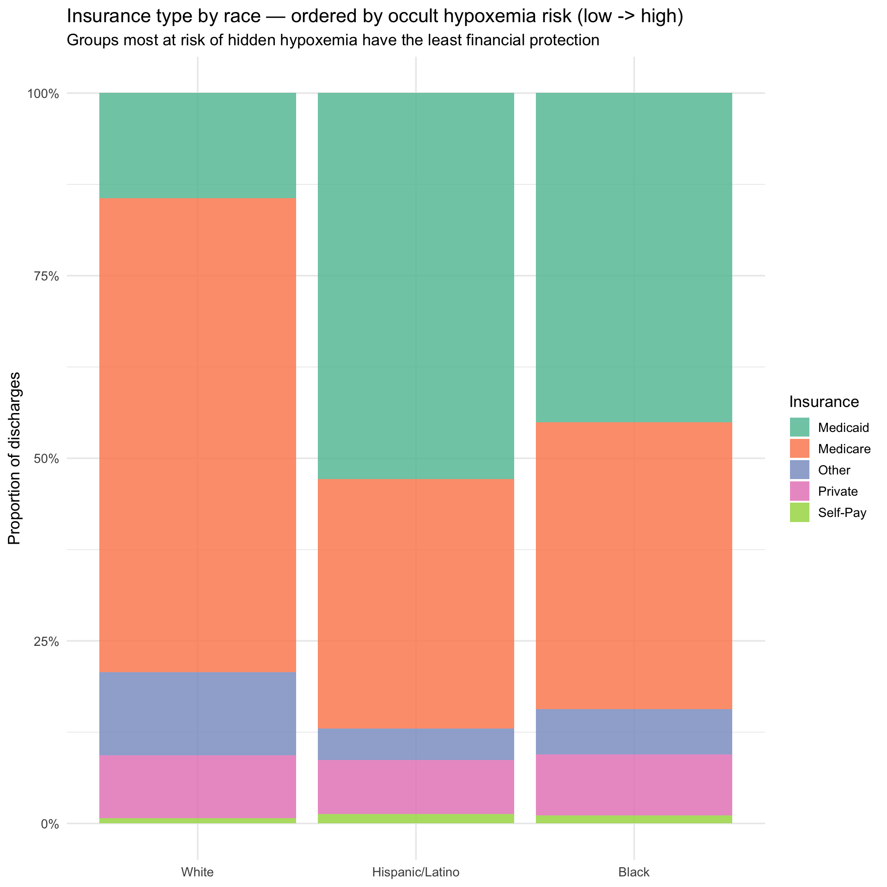
The insurance breakdown, ordered from lowest to highest occult hypoxemia risk left to right, illustrates the compounding structure of the problem. Moving from White to Hispanic/Latino to Black, Medicaid share rises and Medicare share falls — meaning the groups most likely to be misdiagnosed are also the groups with the least financial cushion when that misdiagnosis leads to a more expensive hospitalization. The next plot asks whether the misdiagnosis gradient and the cost gradient point in the same direction.
Hypoxemia Charges Side by Side
Show code
p_hyp <- bridge |>
mutate(race_eth = factor(race_eth, levels = race_order)) |>
ggplot(aes(x = race_eth, y = occult_hypoxemia_rate, fill = race_eth)) +
geom_col(alpha = 0.85, show.legend = FALSE) +
geom_text(aes(label = percent(occult_hypoxemia_rate, accuracy = 0.1)),
vjust = -0.4, size = 4) +
scale_y_continuous(labels = percent_format(),
expand = expansion(mult = c(0, 0.15))) +
scale_fill_brewer(palette = "Set1") +
labs(
title = "Occult hypoxemia rate by race",
subtitle = "OpenOximetry — who gets misdiagnosed",
x = NULL, y = "Occult hypoxemia rate"
)
p_charges <- bridge |>
mutate(race_eth = factor(race_eth, levels = race_order)) |>
ggplot(aes(x = race_eth, y = median_charges, fill = race_eth)) +
geom_col(alpha = 0.85, show.legend = FALSE) +
geom_text(aes(label = dollar(median_charges, accuracy = 1)),
vjust = -0.4, size = 4) +
scale_y_continuous(labels = dollar_format(),
expand = expansion(mult = c(0, 0.15))) +
scale_fill_brewer(palette = "Set1") +
labs(
title = "Median hospital charges by race",
subtitle = "SPARCS — who pays more",
x = NULL, y = "Median total charges"
)
p_hyp + p_charges +
plot_annotation(
title = "The same racial ordering appears in both misdiagnosis rates and hospital charges",
subtitle = "Black patients: highest occult hypoxemia rate and highest median charges"
)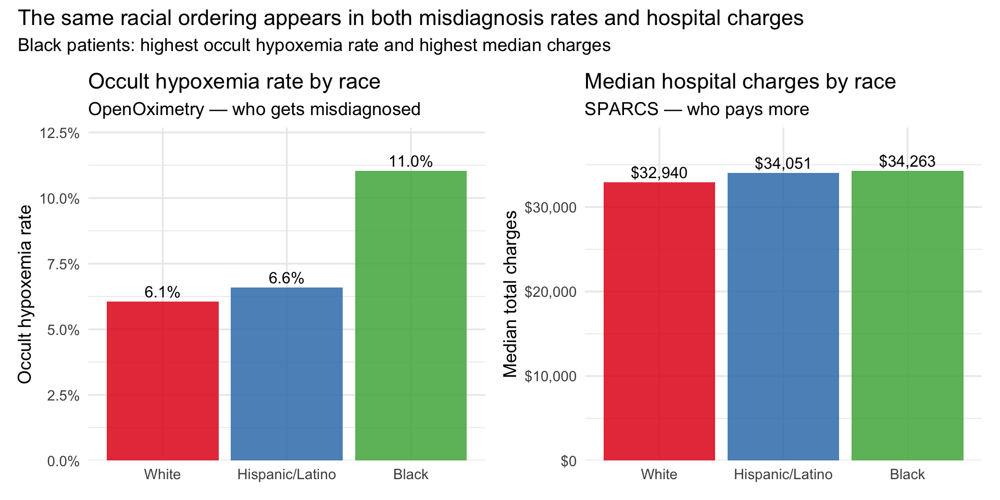
The bars above place the two datasets in direct conversation. The ordering on the left — White lowest, Hispanic/Latino moderate, Black highest — is the occult hypoxemia gradient from OpenOximetry. The ordering on the right is the median charge gradient from SPARCS. They are not identical, which is expected: these are different populations measured in different settings. But the direction is consistent, and that directional consistency is the ecological evidence the bridge is designed to test. The double burden plot below adds the insurance dimension to the same picture.
The Double Burden
Show code
bridge |>
ggplot(aes(x = occult_hypoxemia_rate, y = pct_unprotected,
size = median_charges, label = race_eth)) +
geom_point(alpha = 0.85, color = "#6a3d9a") +
geom_text_repel(size = 4, fontface = "bold") +
scale_x_continuous(labels = percent_format(accuracy = 0.1)) +
scale_y_continuous(labels = percent_format(accuracy = 1)) +
scale_size_continuous(labels = dollar_format(), range = c(4, 12)) +
labs(
title = "The double burden: hidden hypoxemia risk and financial vulnerability",
subtitle = "Groups most likely to be misdiagnosed are also least insured",
x = "Occult hypoxemia rate (OpenOximetry)",
y = "% on Medicaid or Self-Pay (SPARCS)",
size = "Median charges"
)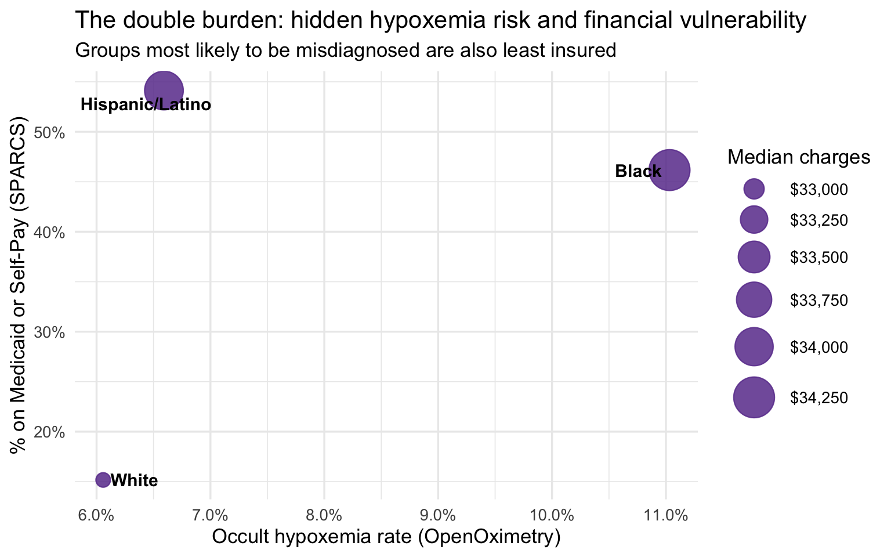
The group-level bridge is suggestive but not conclusive for one important reason: White respiratory patients in SPARCS are substantially older than Black and Hispanic/Latino patients, and older patients tend to arrive sicker and stay longer regardless of any clinical bias. If age is driving the severity and cost differences, the apparent disparity could be mostly a demographic artifact. The age-stratified analysis below addresses this directly by comparing racial groups within the same age band, removing age as a confound.
Age-Stratified Analysis
Age confounds the group-level comparison — White respiratory patients skew older and are predominantly on Medicare. Stratifying by age band enables a fair within-band comparison. The 103K-row SPARCS extract provides stable cell counts (3,000–26,000 per race × age band).
Show code
sparcs_age <- sparcs |>
filter(!is.na(race_eth), !is.na(age_group)) |>
group_by(race_eth, age_group) |>
summarise(
n_discharges = n(),
median_charges = median(total_charges, na.rm = TRUE),
median_costs = median(total_costs, na.rm = TRUE),
median_los = median(length_of_stay, na.rm = TRUE),
mean_severity = mean(severity_code, na.rm = TRUE),
mortality_rate = mean(died, na.rm = TRUE),
pct_medicaid = mean(insurance == "Medicaid", na.rm = TRUE),
.groups = "drop"
)
sparcs_age |>
mutate(
median_charges = dollar(median_charges),
median_los = round(median_los, 1),
mean_severity = round(mean_severity, 2),
mortality_rate = percent(mortality_rate, accuracy = 0.1),
pct_medicaid = percent(pct_medicaid, accuracy = 0.1)
) |>
arrange(age_group, race_eth) |>
knitr::kable(
col.names = c("Race", "Age group", "N", "Median charges", "Median costs",
"Median LOS", "Mean severity", "Mortality rate", "% Medicaid"),
caption = "**Table 4. Age-stratified outcomes by race — full SPARCS respiratory extract**"
)| Race | Age group | N | Median charges | Median costs | Median LOS | Mean severity | Mortality rate | % Medicaid |
|---|---|---|---|---|---|---|---|---|
| Black | 18–49 | 3068 | $29,154.88 | 8772.115 | 3 | 2.32 | 1.3% | 64.0% |
| Hispanic/Latino | 18–49 | 2603 | $29,920.59 | 9361.500 | 3 | 2.22 | 0.8% | 70.0% |
| White | 18–49 | 4503 | $28,700.30 | 8180.970 | 3 | 2.36 | 1.5% | 38.6% |
| Black | 50–69 | 7263 | $37,102.08 | 11575.360 | 4 | 2.63 | 3.0% | 44.6% |
| Hispanic/Latino | 50–69 | 4815 | $40,045.09 | 13144.540 | 4 | 2.56 | 2.3% | 50.6% |
| White | 50–69 | 17261 | $31,870.02 | 9529.020 | 4 | 2.68 | 3.7% | 19.4% |
| Black | 70+ | 4222 | $51,943.90 | 14438.320 | 5 | 2.78 | 6.6% | 4.3% |
| Hispanic/Latino | 70+ | 3997 | $48,670.61 | 14212.130 | 4 | 2.69 | 6.3% | 10.0% |
| White | 70+ | 26160 | $35,915.02 | 10366.230 | 4 | 2.79 | 7.4% | 0.7% |
Cell counts range from roughly 3,000 to 26,000 per race × age combination — large enough that all estimates below are stable. The 18–49 band tests whether disparities exist before age-related comorbidities accumulate. The 50–69 band is the cleanest insurance-controlled comparison: old enough for respiratory conditions to carry real clinical weight, young enough that most patients are not yet on Medicare. The 70+ band is where both insurance and severity converge — making any residual gap the hardest to explain away and the most compelling evidence for a pre-admission clinical mechanism.
Show code
sparcs_age |>
ggplot(aes(x = age_group, y = median_charges,
color = race_eth, group = race_eth)) +
geom_line(linewidth = 1.1) +
geom_point(size = 3) +
geom_text_repel(aes(label = dollar(median_charges, accuracy = 1)),
size = 3.2, show.legend = FALSE) +
scale_y_continuous(labels = dollar_format()) +
scale_color_brewer(palette = "Set1") +
labs(
title = "Median charges by age group and race",
subtitle = "Black and Hispanic/Latino patients are billed more at every age band",
x = "Age group", y = "Median total charges", color = "Race / Ethnicity"
)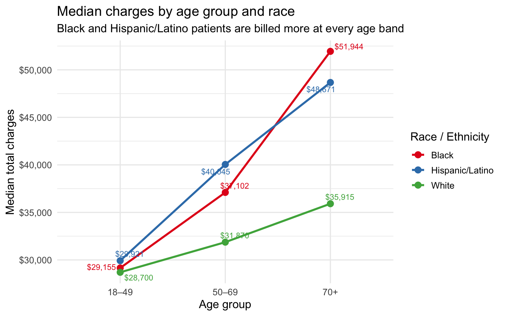
The charge gap is present at every age band and widens with age. At 18–49 the difference is small — under $1,500 between any two groups. By 50–69 it has opened to roughly $8K between Hispanic/Latino and White patients. By 70+ Black patients are billed ~$16K more and Hispanic/Latino patients ~$13K more than White patients at the same age. The bar chart below isolates the 50–69 band as the single cleanest age-controlled comparison, where insurance mix still differs across races but age no longer does.
Show code
# 50–69 is the cleanest comparison: old enough to have respiratory comorbidities,
# young enough that most are not yet on Medicare — insurance mix is most comparable
sparcs_age |>
filter(age_group == "50–69") |>
mutate(race_eth = fct_reorder(race_eth, median_charges)) |>
ggplot(aes(x = race_eth, y = median_charges, fill = race_eth)) +
geom_col(alpha = 0.85, show.legend = FALSE) +
geom_text(aes(label = dollar(median_charges, accuracy = 1)),
vjust = -0.4, size = 4.5) +
scale_y_continuous(labels = dollar_format(),
expand = expansion(mult = c(0, 0.15))) +
scale_fill_brewer(palette = "Set1") +
labs(
title = "Median charges by race — ages 50 to 69 only",
subtitle = "Age-controlled comparison: Black and Hispanic/Latino patients pay more at the same life stage",
x = NULL, y = "Median total charges"
)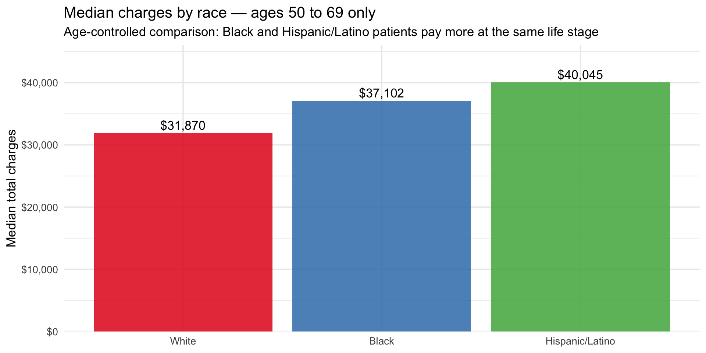
Within the 50–69 band alone, Hispanic/Latino patients are billed ~$8K more than White patients and Black patients ~$5K more, after removing age as a variable. This is the most conservative framing of the disparity — and it still shows a consistent gap. The Medicaid line plot below adds the final piece by showing how financial vulnerability tracks the same racial gradient across all three age bands, and what happens to it at 70+ when Medicare takes over.
Show code
sparcs_age |>
ggplot(aes(x = age_group, y = pct_medicaid,
color = race_eth, group = race_eth)) +
geom_line(linewidth = 1.1) +
geom_point(size = 3) +
geom_text_repel(aes(label = percent(pct_medicaid, accuracy = 1)),
size = 3.2, show.legend = FALSE) +
scale_y_continuous(labels = percent_format()) +
scale_color_brewer(palette = "Set1") +
labs(
title = "Medicaid share by age group and race",
subtitle = "Financial vulnerability is highest at working age for Black and Hispanic/Latino patients",
x = "Age group", y = "% on Medicaid", color = "Race / Ethnicity"
)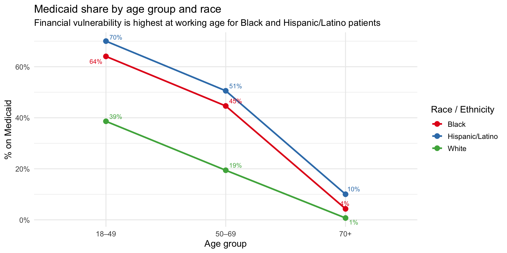
Key finding: At 70+, two potential explanations for the charge gap simultaneously collapse. First, Medicaid coverage converges to near zero across all groups as patients shift to Medicare (Hispanic/Latino 10%, Black 4%, White 1%) — so insurance can no longer explain the difference. Second, severity scores converge tightly at 70+ (White 2.79, Black 2.78, Hispanic/Latino 2.69) — so illness severity at admission cannot explain it either. Yet Black patients are billed ~$16K more than White patients and Hispanic/Latino patients ~$13K more, at the same age, with the same insurance, at the same severity. The residual gap — unexplained by age, insurance, or recorded severity — is consistent with a clinical mechanism upstream of hospital admission, such as delayed treatment from undetected hypoxemia inflating the true disease burden beyond what severity scores capture at the point of care.
Summary of Key Findings
| Finding | Evidence | Dataset |
|---|---|---|
| Darker skin → higher occult hypoxemia | Black patients: ~10.5% occult hypoxemia rate vs. ~6% for White; a continuous positive gradient is confirmed by loess smoother across all six Fitzpatrick scores | OpenOximetry |
| Black and Hispanic/Latino patients pay more at every age | Charge gap is present at 18–49 (~$1K) and widens substantially by 70+ (~$16K for Black, ~$13K for Hispanic/Latino vs. White) | SPARCS |
| The gap survives controlling for both insurance and severity | At 70+, Medicaid rates and severity scores nearly equalize across racial groups, yet the charge gap reaches its maximum — ruling out both as primary explanations | SPARCS |
| Financial vulnerability is greatest at working age | 70% of Hispanic/Latino and 64% of Black respiratory patients aged 18–49 are on Medicaid vs. 39% of White patients — the highest-risk group is also the least protected | SPARCS |
| The double burden applies differently by group | Black patients face both elevated hypoxemia risk (~10.5%) and Medicaid exposure (~45%); Hispanic/Latino patients face extreme financial vulnerability (~55% Medicaid) with moderate hypoxemia risk (~6.5%), suggesting additional drivers beyond device bias | Bridge |
| Severity and insurance are insufficient explanations | The charge gap widens precisely when both converge, pointing to a pre-admission clinical mechanism consistent with undetected hypoxemia | Bridge |
Because the two datasets are not linked at the patient level, all bridge findings are ecological associations, not causal estimates. The pattern is consistent with the pulse oximeter bias hypothesis but cannot confirm it.